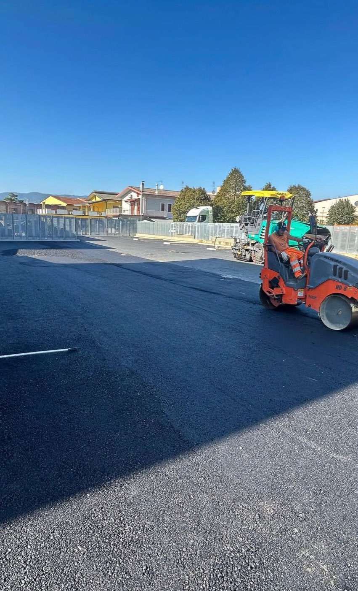
Qualificati SOA OG3 per strade, autostrade, ponti e opere di urbanizzazione. Scaviamo, posiamo le reti, gettiamo i muri e asfaltiamo noi: un cantiere, un interlocutore.
Le carte, con numeri e scadenze, stanno nella pagina Certificazioni e documenti: per una gara o un subappalto mandiamo la documentazione completa in giornata.
È tutto quello che sta fra il terreno come si trova e una strada su cui si passa: lo scavo del cassonetto, i sottofondi compattati per strati, le reti interrate che vanno sotto la sede stradale, i cordoli e le caditoie, i muri che tengono il rilevato, il binder e il tappeto d'usura.
La differenza fra un'impresa di scavi e un'impresa stradale è qui: noi la strada la consegniamo finita. Sono lavorazioni che quasi sempre arrivano insieme — si asfalta perché si è scavato per un acquedotto, si getta un muro perché la strada passa in mezzo a una scarpata — e quando le fa una ditta sola non c'è nessuno che aspetta nessuno.
Lavoriamo per committenti pubblici — comuni, consorzi, enti — e per privati e aziende: piazzali, strade di accesso, corti, viabilità di servizio in montagna.
Lo scriviamo perché è la parte che non si vede e che decide quanto dura. Un tappeto nuovo steso su un cassonetto fatto male si rompe al secondo inverno, e a quel punto si rifà tutto.
Si scava fino alla quota di progetto e si porta via il materiale. È il passaggio in cui si decide se la strada terrà: se il piano di posa resta molle, sopra non c'è spessore che rimedi.
Stabilizzato steso e compattato per strati, non tutto in una volta. Ogni strato si rulla e si controlla la quota prima di coprirlo.
Le reti vanno sotto adesso, non dopo: fognature, acquedotto, gas, cavidotti. Riaprire una strada appena asfaltata per posare un tubo è il costo che si vede nei preventivi fatti al risparmio.
Cordoli, caditoie, pendenze. L'acqua che resta sulla piattaforma si infila nelle giunzioni e in due inverni il tappeto si sgretola: la maggior parte degli asfalti rotti è un problema di scolo, non di bitume.
Lo strato di collegamento, steso con finitrice e rullato caldo. Dà spessore portante e riceve il tappeto.
L'ultimo strato, quello che si vede e che prende il traffico. Si stende con la finitrice, si rulla finché è in temperatura e si apre al transito quando è freddo.
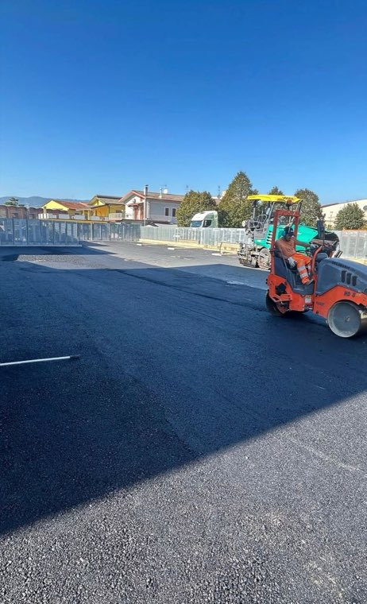
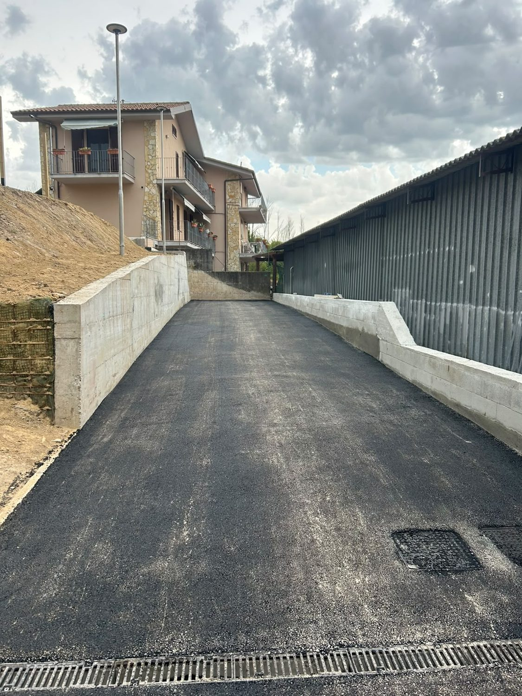
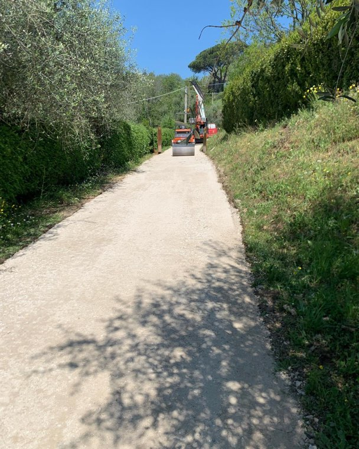
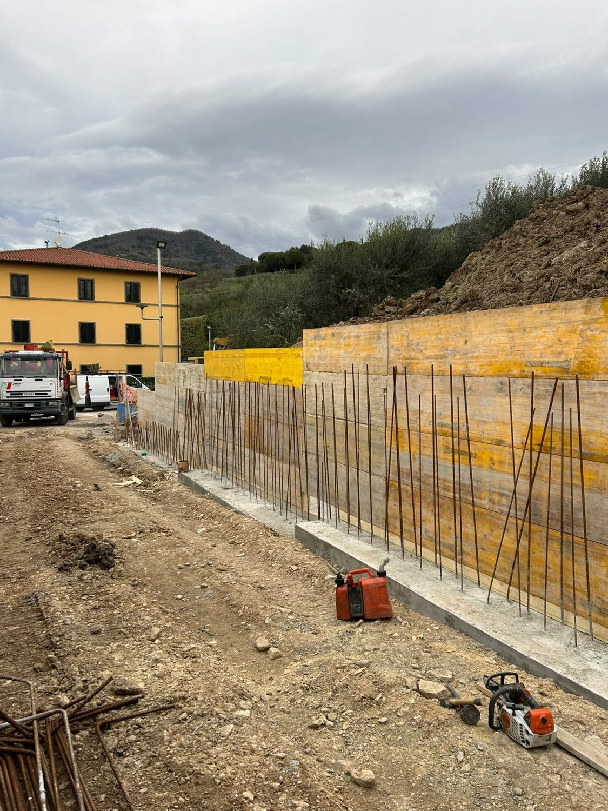
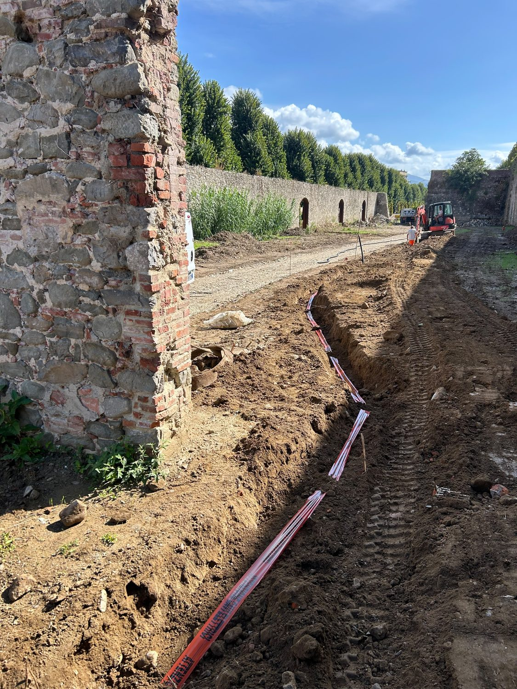
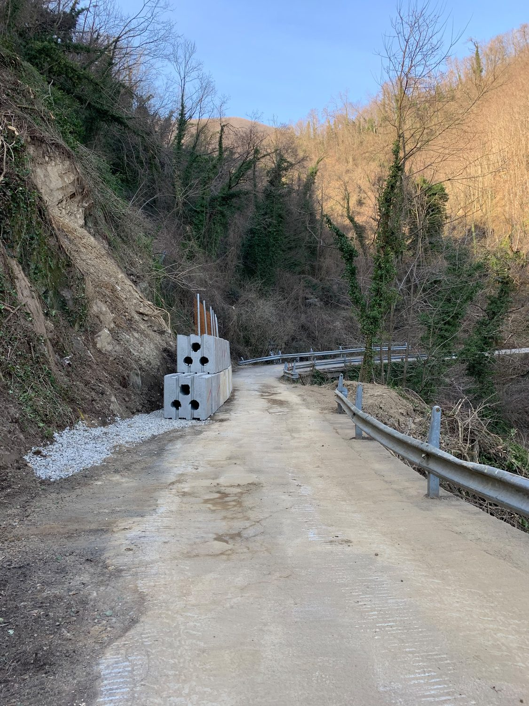
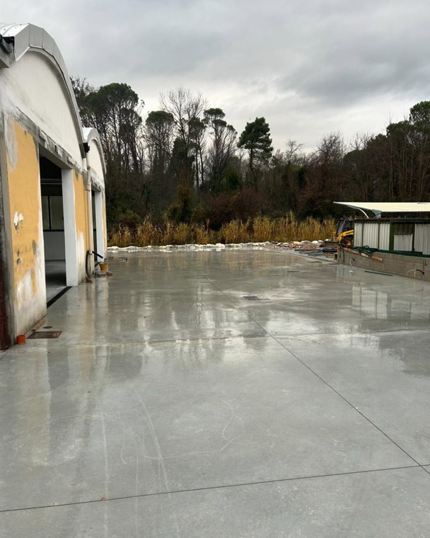
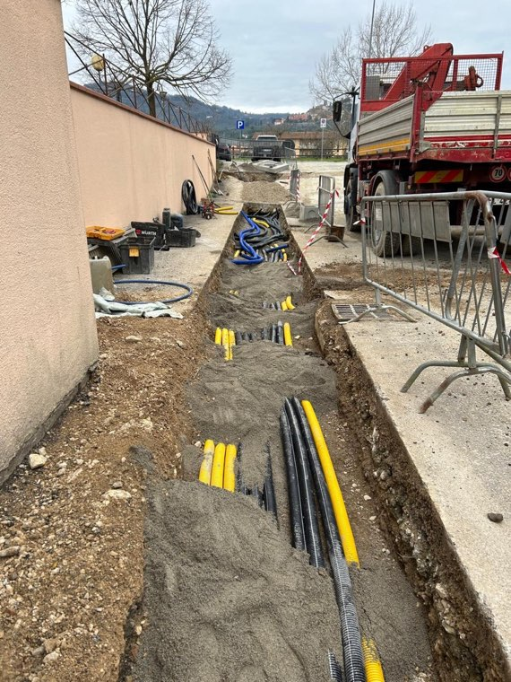
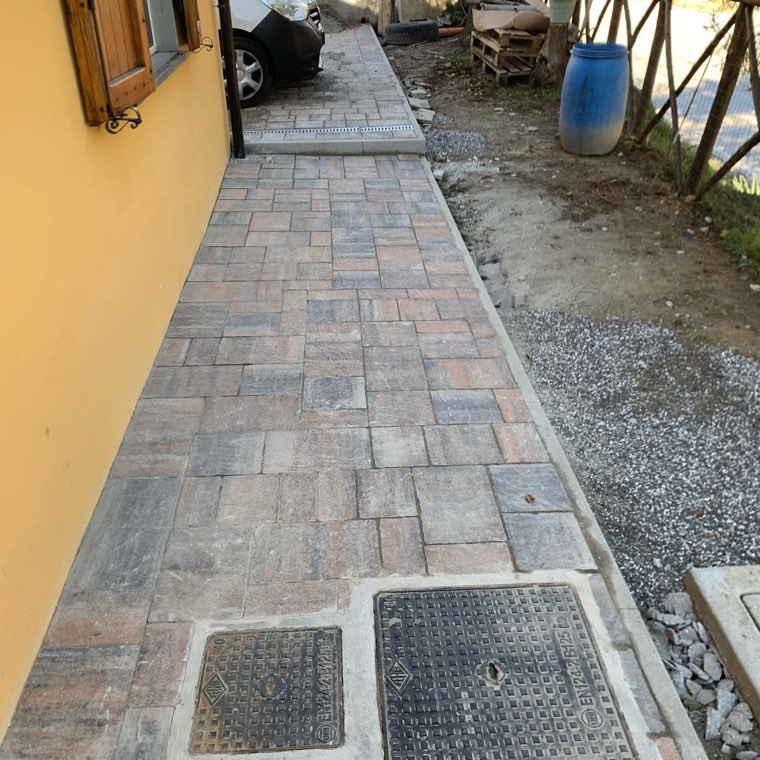
Ogni pezzo di un cantiere stradale ha la sua pagina, con i lavori fatti.
Asfaltature stradali, di parcheggi e piazzali con stesa a finitrice e rullatura, finiture di alta qualità e tempi di consegna rapidi.
Vedi il servizio →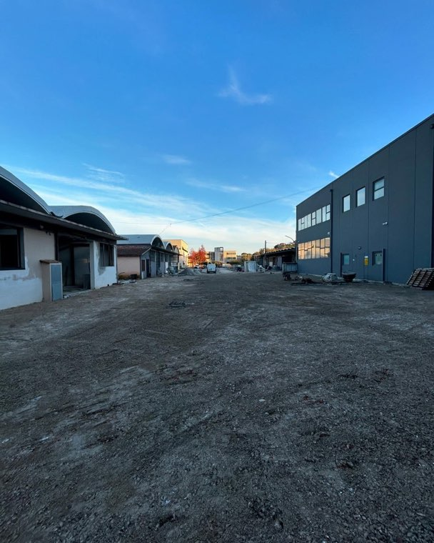
Urbanizzazione completa di comparti produttivi e residenziali: sottoservizi, viabilità, piazzali industriali e marciapiedi, con un unico interlocutore.
Vedi il servizio →Realizzazione e manutenzione di reti fognarie civili e industriali, acquedotti, gasdotti e cavidotti, con ripristino della pavimentazione.
Vedi il servizio →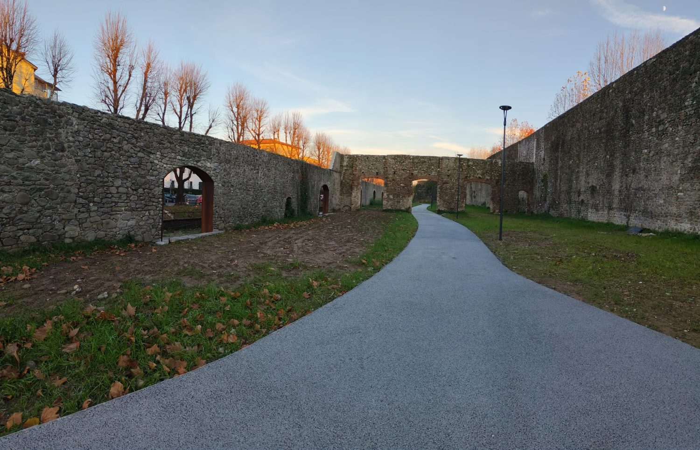
Pavimentazioni in calcestruzzo drenante per piste ciclopedonali, percorsi e aree pedonali: meno ristagni e allagamenti, più sicurezza.
Vedi il servizio →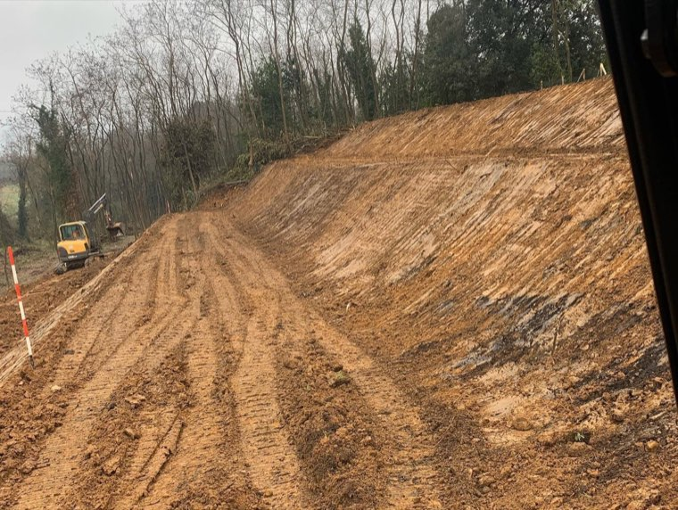
Scavi di fondazione, sbancamenti, terrazzamenti e modellazione di terreni con mezzi propri, in Valdinievole e provincia di Pistoia.
Vedi il servizio →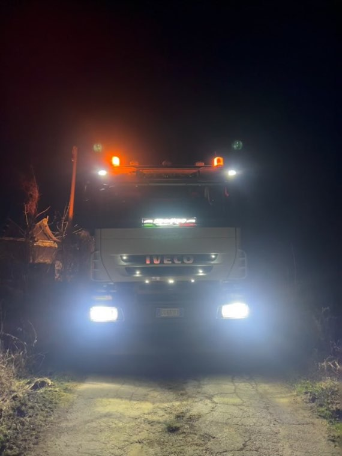
Interventi in somma urgenza per movimenti franosi, strade interrotte ed eventi meteorici, anche nei giorni festivi, in Valdinievole e sulla montagna pistoiese.
Vedi il servizio →Per un ente o un general contractor la domanda non è se sappiamo asfaltare: è se abbiamo le carte. Le abbiamo, e sono queste.
| In giornata | Pescia, Uzzano, Buggiano, Marliana, Montecatini Terme, Monsummano Terme e la montagna pistoiese — la sede è in Via Mammianese 323 a Pescia |
| Provincia di Pistoia | Tutta, Pistoia città compresa |
| Provincia di Lucca | Tutta, Lucca città compresa, fino alla Media Valle del Serchio |
| Fuori provincia | Per cantieri di almeno una o due settimane: sotto quella soglia il trasporto dei mezzi peserebbe sul preventivo più del lavoro, e preferiamo dirlo subito |
Pagine di zona: Pescia
Un'impresa di scavi muove la terra. L'edilizia stradale comprende tutto quello che serve per consegnare una strada finita: cassonetto, sottofondi, sottoservizi, cordoli e caditoie, binder e tappeto d'usura, più i ripristini. Escavazioni 2000 fa entrambe le cose con mezzi e personale propri, e per i lavori pubblici è qualificata con l'attestazione SOA in categoria OG3.
No, per i lavori privati non serve. L'attestazione SOA è obbligatoria per gli appalti pubblici sopra i 150.000 euro: Escavazioni 2000 è attestata in categoria OG3 — strade, autostrade, ponti e opere di urbanizzazione — classifica I, quindi può assumere contratti pubblici di questo tipo fino a 258.000 euro, e importi più alti in associazione con altre imprese.
Sì, ed è la parte più grossa del lavoro: piazzali di aziende, strade di accesso, corti condominiali, viabilità di servizio in montagna. Spesso nello stesso cantiere entrano anche i muri di contenimento in cemento armato e le griglie di raccolta delle acque.
Dipende dai metri quadrati, da quanto si scava, dallo spessore richiesto e da come si smaltisce l'acqua: un numero dato al telefono senza avere visto il posto non serve a nessuno. Veniamo a vedere e facciamo il preventivo gratuito, con le voci separate — così si vede cosa si può togliere e cosa no.
Lavoriamo su tutta la provincia di Pistoia e tutta la provincia di Lucca, Pistoia e Lucca città comprese, fino alla Media Valle del Serchio. In Valdinievole e sulla montagna pistoiese siamo sul posto in giornata, perché la sede è a Pescia. Fuori dalle due province ci spostiamo per i cantieri di almeno una o due settimane.
Il tappeto d'usura si apre al traffico quando è freddo: in genere qualche ora, di più se la giornata è calda e lo spessore è alto. Sui ripristini dopo scavo si può riaprire in giornata, ed è il motivo per cui in centro abitato lavoriamo per tratti brevi invece di aprire tutta la via.
Siamo sul territorio, i mezzi sono nostri e la squadra è reperibile, e i materiali di uso corrente li teniamo a magazzino. Abbiamo già aperto cantieri di domenica.
Veniamo a vedere il posto e le facciamo il preventivo gratuito, con le voci separate. Per una gara o un subappalto le mandiamo la documentazione completa in giornata.